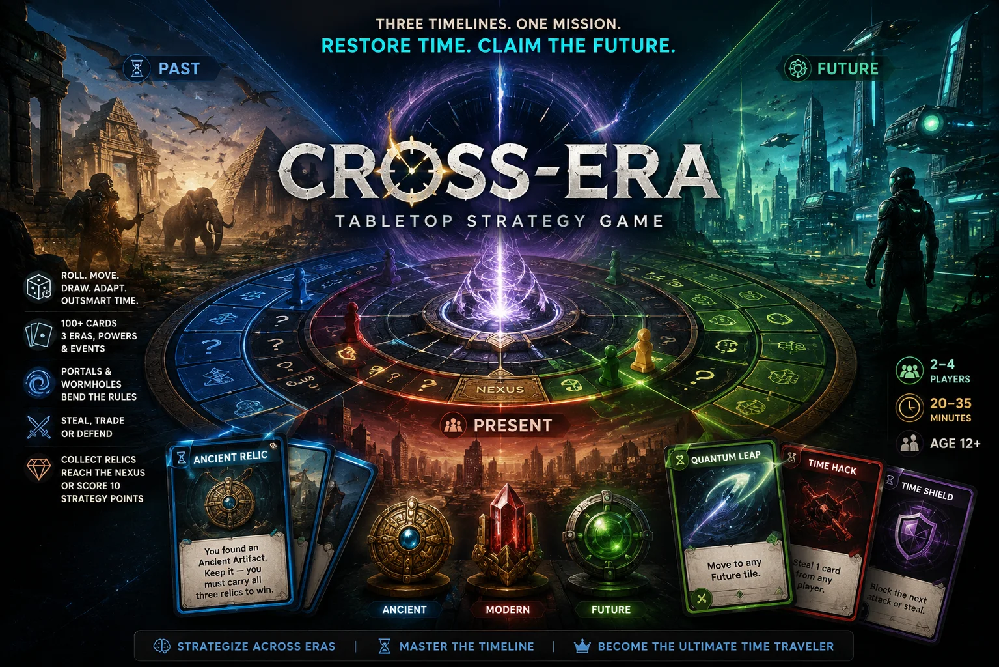
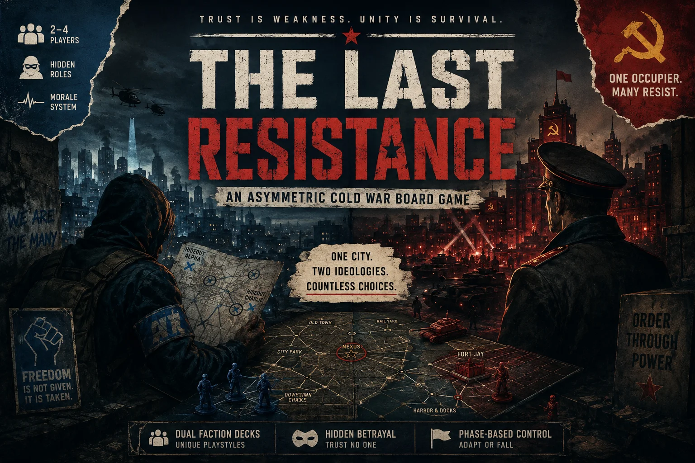
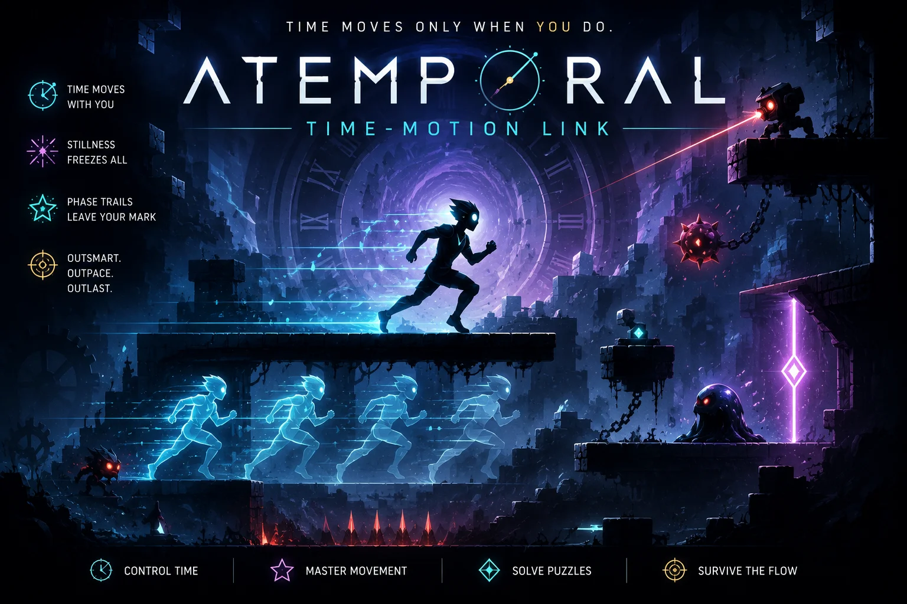
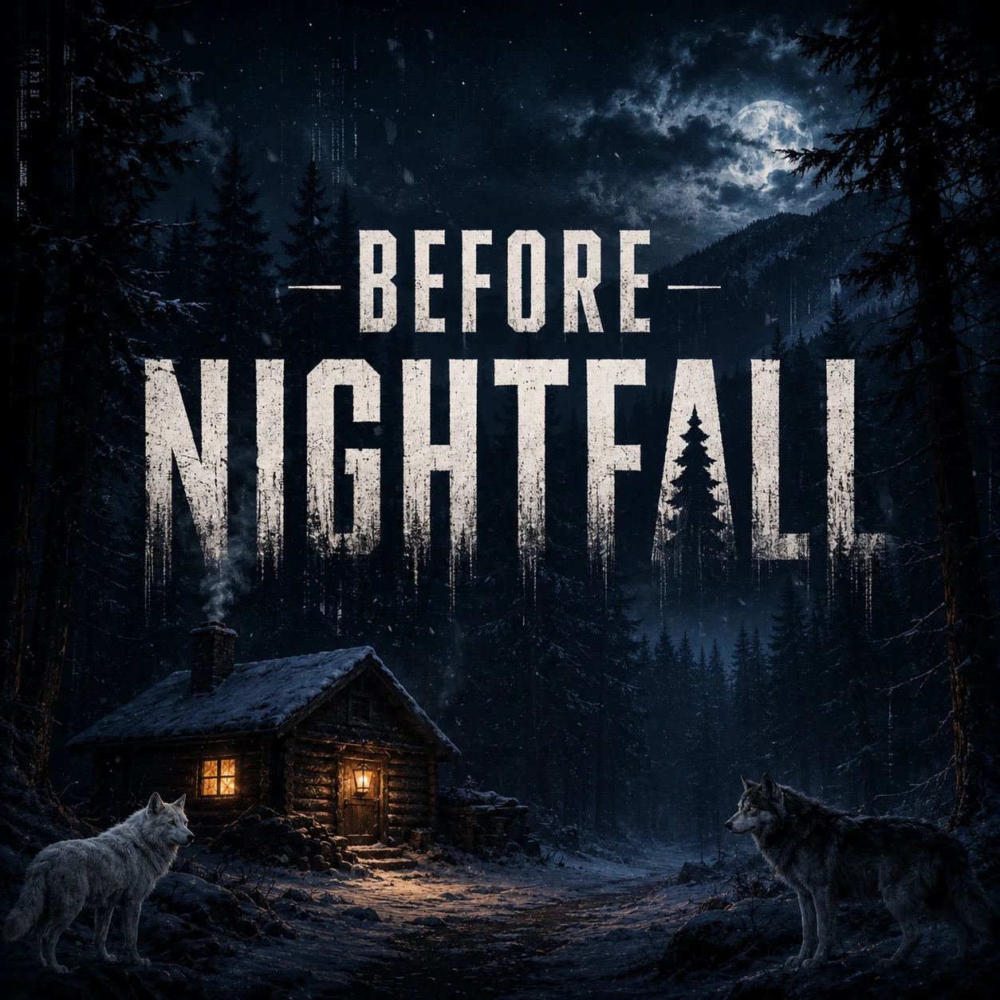
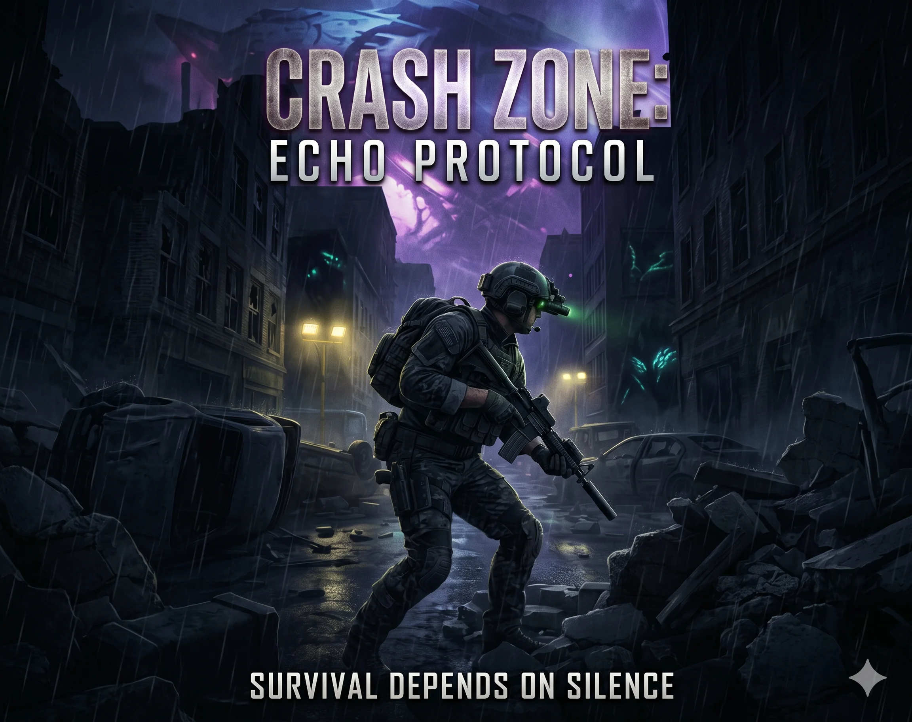
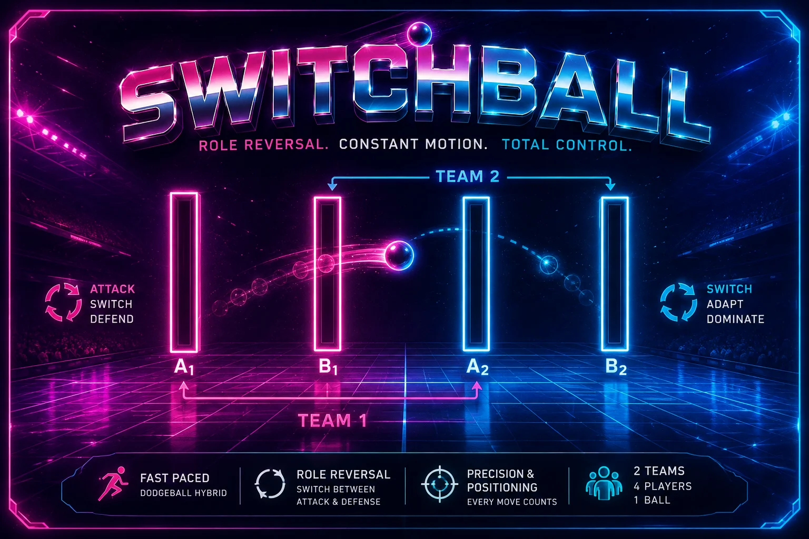
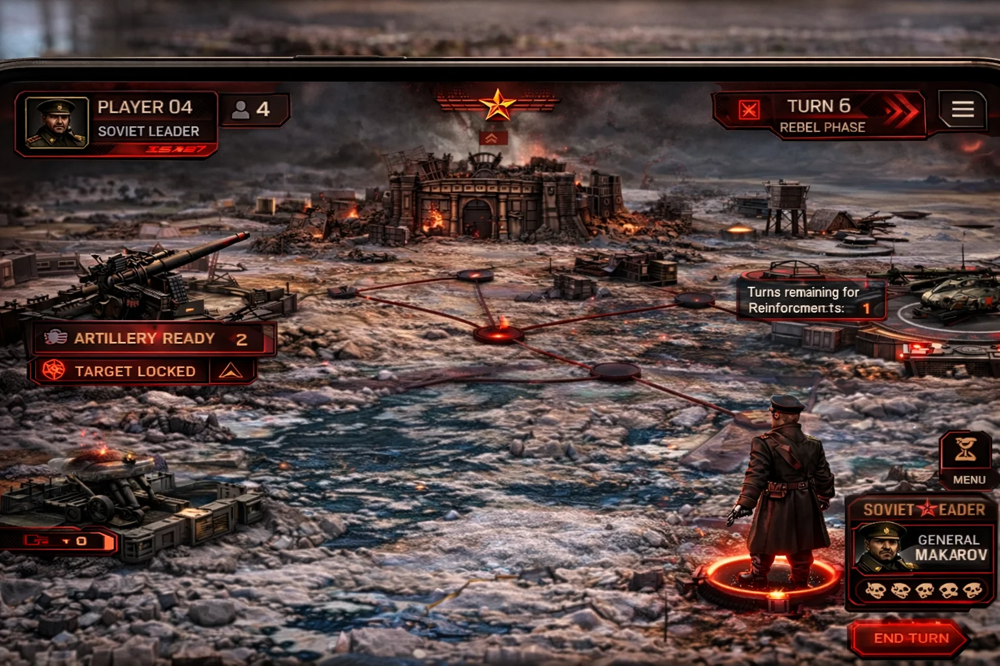
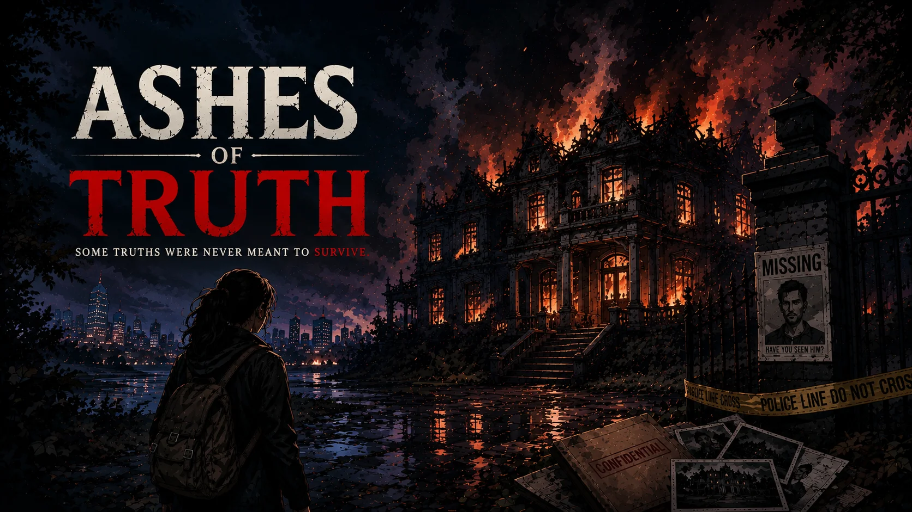

PARAS GARG
Crafting immersive experiences through thoughtful mechanics, balanced systems and compelling level design.
About Me
I'm a Game Designer passionate about crafting engaging, balanced and memorable player experiences.
With hands-on experience in digital and physical game design, prototyping and competitive game jams, I bridge the gap between creative vision and technical execution. I carry a strong understanding of gameplay systems, mechanics and player behaviour.
Experienced in identifying design and functionality issues through structured testing and clear documentation. I'm comfortable working with technical concepts, with a strong foundation in coding languages and gameplay scripting.
Paras Garg
Game DesignerDesign Competence
Game Design
- Mechanics & Core Loop Design
- Game Design Documentation (GDD)
- Spatial Pacing & Level Design
- Gameplay Balancing & Risk-Reward Design
- Asymmetrical Gameplay Systems
- Progression Systems
- Quick Prototyping
- Economy Balancing
Testing & Analysis
- Functional Gameplay Playtesting
- System Efficacy & Balancing Audits
- Edge-Case Scenario Testing
- Clear Issue Documentation & Logs
- Iterative Rule Refinement
- UX & Onboarding Evaluation
- Player Behaviour Analysis
- Feedback Integration
Tools & Tech
- Unity Engine (Gameplay Scripting & Prototyping)
- Unreal Engine (Blueprints)
- C++ / Python / SQL
- Photoshop (UI/UX & 2D Graphics)
- Blender (3D Graybox Modeling)
- Paper Prototyping & Layout Mapping
- Git & GitHub
Featured Projects

Cross-ERA
A 2-4 player tabletop strategy game where fractured timelines — Past, Present and Future — overlap on a single three-ring board. Players become Time Travelers collecting era-specific relics and racing to the central Nexus. Gameplay blends deterministic card management across five unique decks (Past, Present, Future, Power, Event) with a single d6 for movement, delivering deep tactical decisions in tight 20-35 minute sessions.

The Last Resistance
An asymmetric Cold War board game, pitting Rebel fighters against a Soviet occupier across a divided city map. A Morale Meter governs attack viability; dual faction decks (Rebel blue vs Soviet red) create distinct playstyles and a Hidden Betrayal mechanic — reshaping board control and forcing every player to weigh trust against tactics.

Atemporal
Developed a 2D time-manipulation game around the GMTK Jam theme where time moves only in proportion to the player's velocity. Engineered interactive mechanics like Phase Trails and rhythmic slime predators to challenge players' spatial pacing and kinetic reflexes.

Before Nightfall
Designed concentric forest zones representing escalating risk layers. Programmed day-to-night predator transition AI and a distraction mechanic where players drop gathered resources to escape. Placed in the Top 10 out of over 100 entries.

Echo Protocol
Designed a stealth-extraction mechanic where blind alien predators react dynamically to auditory signatures. Firing weapons eliminates immediate threats but alerts the entire map, forcing players to balance risk and tactical silence.

SwitchBall
Invented a straight-line setup (A-B-A-B) dodgeball variant focusing on rapid role-switching between attacking and defending. Engineered rule structures regarding catches and axis-locked dodging to maintain high pace and fairness.

The Last Resistance AR
A comprehensive breakdown detailing the selective digitization of a 4-player Cold War board game. Explores automating the secret betrayal mechanic, projecting warning zones for Soviet artillery, and managing player cognitive load with floating real-time stats.

Ashes Of Truth
An in-depth design study on creating mechanical weight for 'moral courage' and 'truth-seeking' in a corruption-exposing narrative. Documents the narrative pacing curve across multiple levels, office/mansion layout flows and managing small explorable 3D boundaries to maintain scoping.
Education
B.Tech in Computer Science (Game Design Specialization)
Chitkara University, Rajpura, India
High School Diploma (Non-Medical Science)
GNF Public School, Patiala, India
Let's Connect
Open to Game Design roles, Internships and Collaborations.
Location
Punjab, India
Open to Relocate